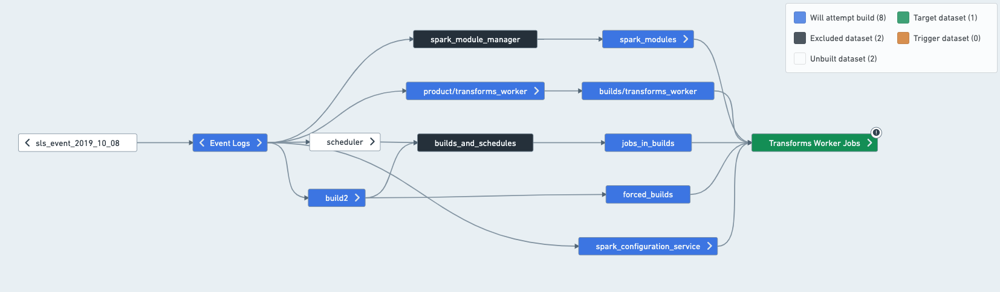
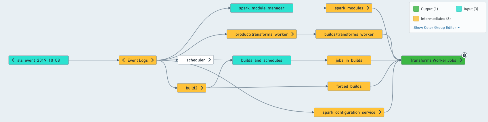
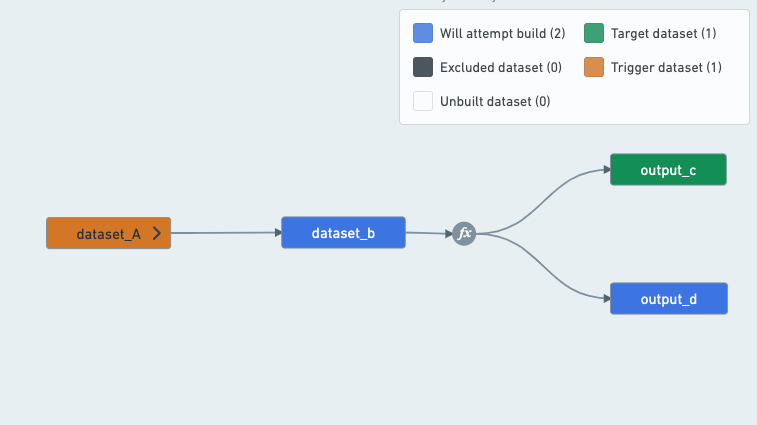
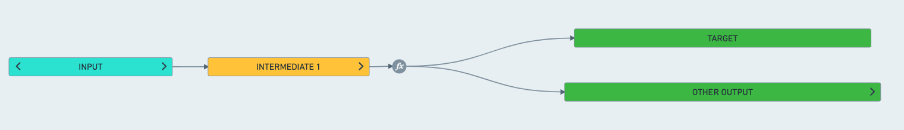
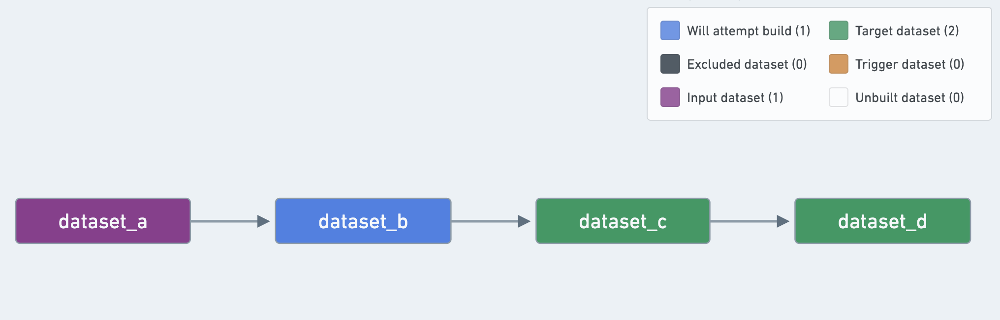

Recommended health checks
This document provides best practices for setting up health checks to monitor the health of your pipelines. Following these guidelines should allow you to achieve a robust and effective level of monitoring to ensure: data gets in, data gets built, and data gets out.
These best practices will not cover ensuring the quality, accuracy or validity of the content within the datasets. This requires more granular and functional knowledge of the pipeline in order to determine the correct validations to be done within the pipeline.
These guidelines should also help you avoid these common pitfalls with health check set-ups:
- Too many checks leading to noise in volume of checks
- The wrong kinds of checks leading to unhelpful alerts
- Too few checks resulting in a lack of signal when there is an issue
Prerequisite knowledge
These guidelines rely on an understanding of:
- Data Health
- Schedules
- The schedule will be the unit of monitoring, meaning these guidelines will give recommendations on where to install which checks based on what happens to it when the schedule runs.
- Data Lineage
:::callout{theme="neutral"}
In this document, references to a schedule's inputs, intermediates, and outputs refer to the resolved schedule, which is not the same as the schedule configuration in the Data Lineage application.
:::
Important monitoring concepts
Unit of monitoring: Resolved schedules
A resolved schedule is a mental model to assign roles to the different datasets involved in a schedule. Some datasets will be involved because they can be built by the schedule, meaning they are a part of the dataset selection of the schedule. Other datasets are involved as required inputs needed for a build. Different health checks are recommended depending on the role of a dataset.
Datasets can have one of the following roles in a schedule:
- Output: A dataset that is the final step of a schedule. They are built by the schedule, but are not used by any other datasets in the schedules
- Intermediates: All datasets built by the schedule that are not outputs of the schedule.
- Inputs: Datasets that are not built by the schedule, but are used by the schedule. The inputs make up the first layer outside of the schedule that is read from; for example, Data Connection syncs and derived datasets that you do not build yourself.
In a concrete example, imagine that a schedule builds the following datasets:

In this case, you can split the schedule as such:

Understand what is built in practice
To determine what the inputs, outputs and intermediates of a schedule are, the easiest way is to open the schedule in Data Lineage. Once in Data Lineage, select the schedule from the sidebar, which will apply schedule coloring to help you understand what the schedule will attempt to build.
- Target: Will attempt building and is usually built by the schedule. One exception is for Data Connection synced datasets, which will only build if "force build" is set on the schedule.
- Excludes: Never built by the schedule.
- Inputs (connecting build only): Not built by the schedule UNLESS they have another input upstream of them.
:::callout{theme="neutral"}
A short aside on staleness: In practice, the schedules rarely build everything in this graph, since some datasets might already be up-to-date, and re-computing them would just waste resources. However, it is still important to understand that resolving a schedule means figuring out everything that the schedule can touch.
:::
Target vs. output
Schedules are defined on targets, and those are usually the same as outputs. However, there are cases where targets and outputs can be different:
- A dataset can be an output without being explicitly defined as a target:

A schedule that builds output_c will always have to build output_d as well, since the transform between B, C and D is a multi-output transform.
Therefore, a schedule that targets output_c will have both output_c and output_d as outputs, since output_d is a dataset built by the schedule that is not used by any other datasets in the schedule.

- A dataset can be defined as a "target" and not be an "output":
Even if a dataset is defined as a schedule "target", if it is used by other datasets in the schedule, it is considered an "intermediate" dataset instead of an "output" dataset.
In this example, dataset_c is a schedule "target", but is not considered an "output":

Where should health checks be installed on a schedule?
The following step-by-step guide relies on an understanding of the difference between job status and schedule status checks, and the difference between data freshness and time since last updated checks. If you are not sure about the differences between these checks, refer to the health check types.
:::callout{theme="neutral"}
Schedules give us a sensible representation of a pipeline. As they are the recommended unit of monitoring, your monitoring will only be as good as the schedules you set up. Take some time before you start setting up your health checks to make sure your schedules adhere to the best practices outlined here.
:::
Checks on schedules
- Schedule status check: This will catch all failures in a pipeline; it is not necessary to put a Job Status Check on each dataset.
- Schedule duration check: Useful for catching possible conflicts or builds that are blocking your pipeline. This check is also useful for detecting problems caused by:
* Abnormal inputs such as joins can take longer when the distribution of keys in an input changes. A failing job having completed all but one task in a stage is a strong signifier of skewed joins.
* Performance degradation introduced by code changes.
Checks on inputs
Install checks on all resolved inputs of your pipelines. If your pipeline fails, it is important to be able to trace down the root cause. Input staleness or schema breaks happen â installing checks on your inputs will help you detect them. Note: for the time being, only one check of a given type can exist on a particular dataset. If a check you wanted to install already exists, just subscribe to it.
- Schema check: This will warn you if columns are added or removed, or column names and types that your pipeline relies on change unexpectedly.
- Time since last updated (TSLU) [Optional]: Allows you to verify that data is delivered on time for the inputs of your pipeline. This can help you perform a root cause analysis when your pipeline does not build on time. It is an optional check and should only be installed if you know exactly what update frequency to expect.
* If there are upstream owners monitoring your input datasets already, you should also avoid applying this check (it is possible you may not even have permissions to add checks on upstream datasets).
* It is recommended to enable the "ignore empty transactions".
- Job or schedule status: Optional, but recommended for Data Connection syncs or datasets where the ownership is not explicitly defined. Schedule Status is recommended, since schedules represent a unit of the pipeline that builds together. Using Schedule Status is recommended over Job Status, as you will get alerted if the input dataset's build fails on an upstream dataset and is cancelled or aborted, resulting in a single job not running.
Checks on outputs
Install checks on all resolved outputs of your pipeline (recall that these are built by the schedule, but are not used by any other datasets in your schedule).
- Time since last updated check (TSLU): Use this check to ensure your pipeline is updating at the required cadence.
* Example: if your pipeline is supposed to run every 24 hours (say, at 9AM every day, the average build taking 1hr), you can either:
- Set the "since last update" threshold to 26 hours (to account for build time and give a bit of leeway) and have the check update automatically.
- Set the threshold to 2 hours and have the check run on a schedule: every day at 11AM in our case. Tip: check the "Automatically resolve" flag, otherwise your pipeline will be considered unhealthy for a full 24 hours in case the build finishes a little bit too late.
- With Schedule Status, Schedule Duration and TSLU checks on output datasets, you get early warnings that something is wrong with schedule status and schedule duration. If the TSLU ends up firing, something is likely wrong and someone should investigate.
- Schema check: Use this check if pipeline outputs are consumed by users in other applications, such as Contour, Slate or Object Explorer. This check will warn you when the output schema breaks, so you can take action if necessary and update downstream applications or let users know.
Optional checks
Optionally, install checks on important intermediate datasets that are consumed by users in another application directly or via syncs:
- Schema check: Similar to outputs, if users are consuming a dataset in any application (be it contour or via syncs), schema changes may cause breaks or require manual follow-up steps.
- Data freshness: Use this to ensure the content of your dataset meets freshness requirements (if you have an appropriate timestamp column that can tell you when a row was added to the dataset in the source system).
- Time since last updated check: If you have a critical dataset (e.g. one used by many other users) that sits in the middle of your pipeline, it might not update on time due to, for example, delayed upstream. You should hopefully detect it thanks to the pipeline input checks, but adding a TSLU check is a useful addition.
- If there is a sync:
* Sync status check: Should be installed on datasets that are being synced (whether to a Foundry application like Slate or to external systems)
* Sync freshness check: This is especially helpful when assessed with Data Freshness and TSLU as you will quickly be able to determine if the issue is a) the dataset did not update in time b) the dataset updated but the source system did not provide fresh data or c) the dataset has fresh data but the sync has not refreshed.
Summary Table
The best practices explained above are summarized in this table for quick reference:
|
Schema |
TSLU |
Data Freshness |
Sync Freshness |
Sync Status |
| Input |
â (allow additions) |
|
|
|
|
| Intermediate |
|
|
|
|
|
| Output |
â (exact match) |
â |
|
|
|
| User-facing datasets* |
â (exact match) |
|
â |
|
|
| Synced Datasets* |
â (exact match) |
|
â |
â |
â |
[*] Can be input, intermediate or output dataset. User-facing datasets are datasets consumed by users directly in apps, such as Contour.